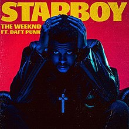

Starboy

제가 요즘 자주 즐겨듣는 앨범 중 하나인 Starboy 입니다. Starboy는 The Weekend라는 알앤비 가수의 3번째 정규 앨범입니다.
대외의 평가를 보자면 메타크리틱 67점에 빌보드 200 1위 기록한 2016 최고의 앨범중 하나라고 보는데요. 세계적으로 유명한 듀오 그룹 Daft Punk가 참여한 앨범이기에 큰 화제를 모았습니다 초심자가 알앤비를 입문하기에 좋은 앨범이라고 생각하고 사람들에게 추천하고 싶어 선정하게 되었습니다.